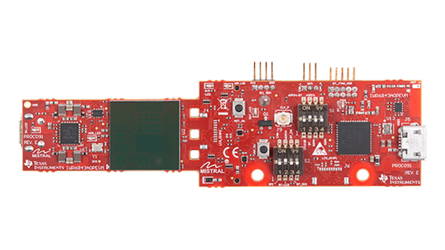
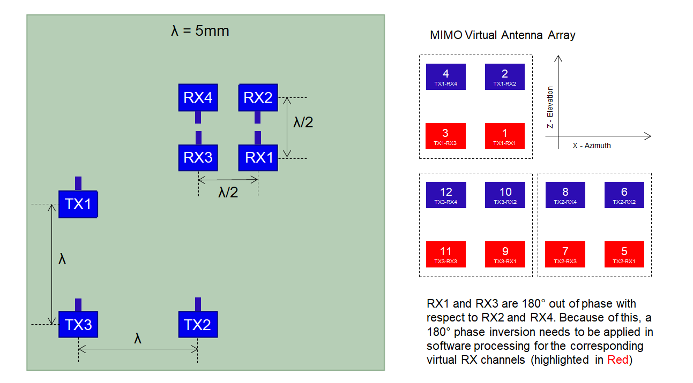
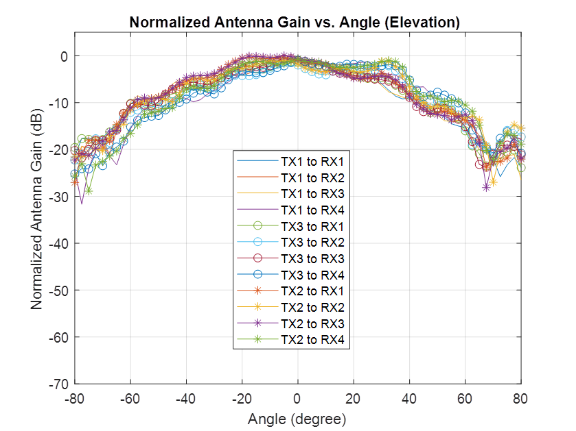
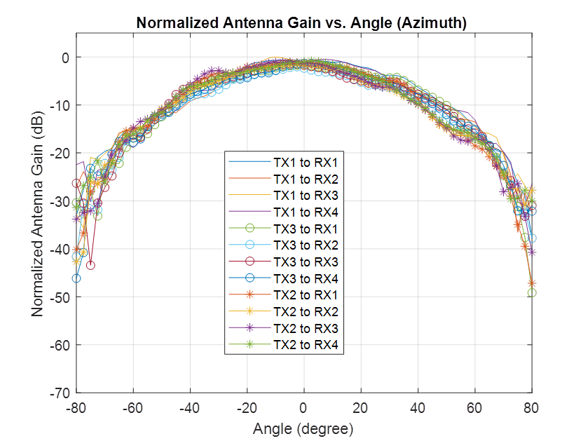

Introduction
============
IWR6843AOP EVM antenna is designed to be operated in 60GHz to 64GHz frequency range.
The IWR6843 antenna-on-package (AoP) evaluation module (EVM) is an easy-to-use mmWave sensor EVM with integrated, short-range, wide field-of-view (FoV) AoP technology.
IWR6843AOP EVM Antenna Picture & Dimensions
=============================================
 <img src="images/iwr6843aopAntenna.jpg" width="400" class="img-responsive"/>

The IWR6843AOPEVM includes four receivers and three transmitters. It operates at 4-Ghz bandwidth from 60 to 64 GHz, with a maximum output power of 12 dBm and a maximum antenna gain of about 5.2 dBi around 60 GHz.
For more details about this EVM, please refer to below link:
http://www.ti.com/tool/IWR6843AOPEVM
Measured Radiation Patterns
============================
Measured radiation patterns of IWR6843AOP Antenna for Elevation and Azimuth can be seen below.


In the above pictures X axis represents the angle (in degrees) and Y axis represents the relative gain (in dB). This radiation pattern is measured inside a Anechoic chamber with a corner reflector. The FMCW chirp used for this measurement has a start frequency of 60GHz and a RF bandwidth of 2GHz.